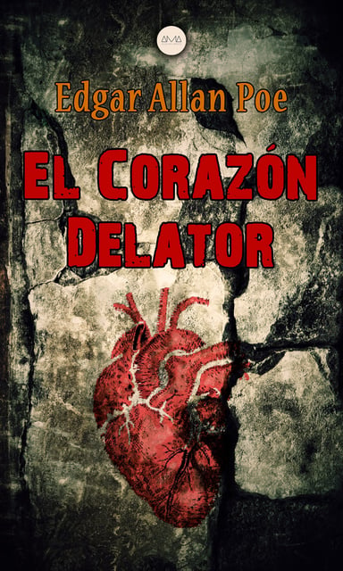

El corazón delator (The Tell-Tale Heart) es uno de los
cuentos más famosos del escritor norteamericano Edgar
Allan Poe. En breves páginas, sumerge al lector en la
mentalidad de un asesino y cuenta una historia que
traspasa las fronteras del tiempo al tratar un tema
universal: la culpa.
Este relato fue publicado en 1843 y se inserta dentro del
terror fantástico, aunque anticipa el relato psicológico
del siglo XX, al ahondar en el interior de su protagonista

AUTOR:
Edgar Allan Poe
Edgar Allan Poe nació el 19 de enero del año 1809 en Boston. Era hijo de Elizabeth
y David Poe, unos actores de teatro que fallecieron cuando él aún era muy joven.
Fue criado por John Allan, que en el año 1815, cuando tenía seis años, le llevó a
Inglaterra y le envió a un internado privado.
En el año 1820 continuó estudiando en centros privados y consiguió entrar en la
universidad de Virginia, donde estudió durante un sólo año. En esos momentos ya
escribía poemas influenciado por otros poetas ingleses.
En el año 1827 ya empezó a acumular deudas que su padre adoptivo se negó a pagar,
y le obligó a conseguir un trabajo para ahorrar dinero. Durante ese tiempo viajó a
Boston para publicar anónimamente su primer libro, llamado ‘Tamerlán y otros poemas”.
Más tarde se alistó al ejército, donde sólo estuvo dos años.
En 1829 publicó su segundo libro de poemas llamado ‘Al Aaraf’ y consiguió reconciliarse
con su padre adoptivo, John, que le consiguió un cargo en la Academia militar.
Desgraciadamente a los pocos meses su superior le expulsó de su cargo.
Al año siguiente publicó su tercer libro llamado ‘Poemas’ y viajó a Baltimore para
vivir con su tía y su prima. Su obra seguía influenciada por poetas ingleses como Milton
y Shelley, y el 1832 su cuento ‘Manuscrito encontrado en una botella’ le hizo ganar un
concurso de literatura.
En el año 1835 se casó en Boston y consiguió un trabajo como redactor en varios revistas
en Filadelfia y Nueva York. Como redactor, su trabajo consistía en reseñar libros y
escribir varias críticas de ellos. Eso le dio algo de fama y sus obras fueron aceptadas
por la crítica.
En el año 1847 su mujer Virginia Clemm murió después de sufrir una larga enfermedad.
Él cayó enfermo y el 7 de octubre del 1849 murió también en Baltimore.
Sus obras
Edgar Allan Poe escribió artículos, poemas y cuentos, aunque mayoritariamente se
dedicó a la poesía. Su estilo siempre estuvo influido por otros poetas ingleses,
y sus primeras obras las publicó de manera anónima.
En su libro ‘El cuervo y otros poemas’, de 1845, se deja ver la tristeza y el
pesimismo que le provocan la larga enfermedad y la muerte de su esposa, y desde
entonces todos su poemas tendrán un aire melancólico.
De sus obras más famosas, se destaca: ‘El cuervo’, ‘Las campanas’, ‘Lenore’,
‘Los crímenes de la calle Morgue’ y ‘El misterio de Marie Rogêt’.
Fue el creador del género literario de misterio y policíaco que ahora
se encuentra en la novela moderna.
FRACES
"¿Pero por qué afirman ustedes que estoy loco?
La enfermedad había agudizado mis sentidos,
en vez de destruirlos o embotarlos."
RESUMEN DEL CUENTO
La historia está narrada en primera persona por un protagonista
sin nombre que se dirige al lector y le cuenta con sumo detalle
el asesinato que cometió. En su confesión, insiste en todo
momento que resulta imposible que fuese obra de un hombre loco,
debido a su rigurosidad y planificación.
Son pocos los detalles contextuales que entrega, sólo indica
que vivía con un viejo cuyo ojo “semejante al de un buitre…un
ojo celeste, y velado por una tela” lo perturbaba a tal nivel
que decidió matarlo.
Así, cuenta cómo en los ocho días previos al asesinato, se
dedicó a observar al anciano mientras dormía, hasta que un
sonido accidental lo despertó y con su linterna logró ver
nuevamente el temido ojo, por lo que llevó a cabo su plan.
Luego de asesinarlo, lo cortó en pedazos y lo escondió bajo
el piso de la habitación, borrando todo rastro de lo sucedido.
Sin embargo, llegó la policía alertada por un vecino que
escuchó un alarido.
El hombre les aseguró a los oficiales que el viejo estaba
fuera del país y que el grito fue emitido por él durante una
pesadilla. Decidió hacerlos pasar y, tan satisfecho con su
trabajo, los instaló en la habitación del crimen, donde se
sentaron a conversar.
En este momento la historia gira hacia lo fantástico,
pues en medio de la agradable reunión, el protagonista
comenzó a sentir el sonido acompasado de los latidos
del viejo que yacía muerto bajo sus pies. El sonido
se hacía cada vez más fuerte y ensordecedor, hasta el
punto en que no logró soportarlo y confesó su crimen.
MENSAJE DEL CUENTO
"El corazón delator" de Edgar Allan Poe deja un mensaje
sobre la naturaleza de la culpabilidad, la obsesión y el
tormento psicológico. El cuento explora cómo la culpa y
la paranoia pueden consumir a una persona hasta el punto
de la locura. El narrador experimenta una intensa obsesión
y aversión hacia el ojo del anciano, que finalmente lo lleva
a cometer un asesinato. Sin embargo, a pesar de sus esfuerzos
por encubrir el crimen, la culpa lo atormenta y lo lleva
al borde de la locura. El latido del corazón del anciano,
que interpreta como un sonido real, simboliza su propia conciencia
culpable. El cuento también sugiere que la confesión puede ser
una forma de liberación para alguien atormentado por la culpa.
Al final del relato, el narrador se ve impulsado a confesar
el crimen debido a la intensificación del latido del corazón,
lo que indica que su tormento emocional finalmente lo lleva
a buscar expiación.
ANÁLISIS DEL CUENTO
El comienzo parece un diálogo (conversación) con una o varias
personas no identificadas. Se ha especulado que el narrador
está confesando a un guardián, a un juez, a un periodista, a
un médico o psiquiatra. Esto puede ser así por la necesidad
del narrador de explicarse con todo detalle. Le sigue un
estudio de terror pero, más específicamente, la memoria del
mismo, ya que el narrador cuenta sucesos del pasado. Las
primeras palabras del texto: «¡Es cierto!», son una confesión
de culpa. Esta introducción sirve también para captar
inmediatamente la atención del lector sobre lo que se cuenta.
Desde este punto, según era propio en Poe, cada palabra está
enfocada al avance de la historia, lo que hace de El corazón
delator posiblemente el mejor reflejo de las teorías de su
autor sobre lo que debe ser un relato perfecto.
El motor de la historia es la insistencia del narrador,
no en su inocencia (que sería lo normal) sino en su cordura.
Pero esto revela una pulsión autodestructiva, ya que se está
pretendiendo demostrar la cordura a través de la culpabilidad
en el crimen. Su negación de la locura se basa, sobre todo,
en lo sistemático de su conducta homicida, en su precisión y
en la explicación racional de una conducta irracional. Esta
racionalidad, sin embargo, está minada por su falta de motivación
—«No hubo motivo. No hubo pasión.»—. Sin embargo, el asesino afirma
que la idea le rondaba día y noche en la cabeza. Así, la escena
final no es más que el resultado del sentimiento de culpa del
personaje. Como muchos otros personajes en la literatura macabra
tradicional, las pasiones dictan su naturaleza. Y pese a todos sus
esfuerzos, evidentemente, la pretensión de haber oído el corazón
latir a distancia, pese a su aguda sensibilidad, es la evidencia
del desvarío y la locura. Los lectores de la época seguramente
se sintieron muy interesados en el tema de la alegación de locura
transitoria que recrea el cuento.
El narrador afirma estar enfermo de hipersensibilidad; un motivo
similar aparece en el personaje de Roderick Usher en La caída de
la casa Usher (1839), así como en El coloquio de Monos y Una (1841).
Pero Poe no deja claro si esa hipersensibilidad es real o imaginaria.
Si es cierto lo que oye, pudieron haber sido simplemente escarabajos
necrófagos, ya que el narrador afirma en una ocasión haberlos oído al
despertar al viejo de su sueño. De acuerdo con la tradición, estos
insectos señalan una muerte inminente. Se sabe que una variedad de
estos coleópteros se restriega contra las superficies como parte de
un rito de apareamiento, igual que otros emiten chasquidos. Henry David
Thoreau sugirió en 1838 que el sonido producido por estos animales
semeja al latido cardíaco. Por otra parte, si los latidos son producto
de la imaginación del asesino, es ella, por tanto, la que ocasiona su
perdición.
La relación entre el viejo y el narrador es ambigua; tampoco se sabe
nada de sus nombres, sus ocupaciones y lugar de residencia. Esta ambigüedad
es como un contrapunto irónico al cuidado del detalle que se manifiesta.
El narrador puede ser un sirviente, o incluso su hijo, en cuyo caso el
«ojo de buitre» podría simbolizar la vigilancia paterna y hasta los principios
heredados sobre lo que está bien y lo que está mal. En tal caso su eliminación
es equiparable a la de la conciencia del bien. El ojo puede también
representar el misterio, jugando otra vez con la ambigua falta de detalle sobre
los personajes. Solo cuando el ojo se ve abierto en la última noche, descubriendo
el secreto, se produce el crimen. De cualquier manera, la relación entre los
personajes es algo secundario; lo principal es el empeño en la comisión del
«crimen perfecto».
El poeta Richard Wilbur ha sugerido que el cuento es una representación
alegórica del poema de Poe titulado A la ciencia, que muestra la lucha
entre la imaginación y la ciencia. En El corazón delator el anciano
representaría la mente científica y racional, mientras que el narrador
sería la imaginación.
Julio Cortázar ve en el relato el tema de Caín, expresado en la obra
de Poe en tres grados: en El demonio de la perversidad en su forma más
pura, en William Wilson ilustra la alucinación visual y en El corazón
delator, la auditiva. Añade que el relato expresa muy bien las obsesiones
sádicas de su autor, y que el ojo de la víctima reaparecerá en El gato negro.
El relato asimismo presenta una admirable concisión, un fraseo breve y nervioso
que le dan un poderoso valor oral, de confesión.
Robert Louis Stevenson hace notar la «poco menos que inverosímil agudeza
en el resbaladizo terreno entre la cordura y la demencia» que manifiestan
este y otros cuentos de Poe; El corazón delator es «una contribución
importante a la psicología mórbida».
PUBLICACIÓN
Este relato fue publicado por primera vez por la revista de Boston The
Pioneer en enero de 1843, editado por James Russell Lowell, y por la que
Poe recibió solo 10 dólares. El original incluye una cita de Henry
Wadsworth Longfellow, de su poema A Psalm of Life. La historia fue
reeditada, con algún cambio, el 23 de agosto de 1845 por el Broadway
Journal. En esta edición se omitió la cita de Longfellow, ya que Poe
pensó que era un plagio. Fue reimpreso varias veces más en vida de
su autor.
INFORMACIÓN DEL CUENTO
El corazón delator —en
inglésoriginal The Tell-Tale Heart— es un
cuentodel escritor estadounidense
Edgar Allan Poe clasificado en la
narrativa gótica, publicado por primera vez en el periódico literario The Pioneer,
del amigo de Poe,
James Russell Lowell, en enero de 1843. Poe lo republicó más tarde en su periódico el
Broadway Journal en
la edición del 23 de agosto de 1845. Ha sido adaptado o servido de inspiración en
numerosas ocasiones y en distintos medios.
La historia presenta a un narrador anónimo obsesionado con el ojo enfermo
(que llama "ojo de buitre") de un anciano con el cual convive. Finalmente
decide asesinarlo. El crimen es planeado cuidadosamente y, tras ser perpetrado,
el cadáver es despedazado y escondido bajo las tablas del suelo de la casa.
La policía acude a la misma y el asesino acaba delatándose a sí mismo, imaginando
alucinadamente que el corazón del viejo se ha puesto a latir bajo la tarima.
No se sabe cuál es la relación entre víctima y asesino. Se ha sugerido que el
anciano representa en el cuento a la figura paterna, y que su "ojo de buitre"
puede sugerir algún secreto inconfesable. La ambigüedad y la falta de detalles
acerca de los dos personajes principales están en agudo contraste con el
detallismo con que se recrea el crimen.